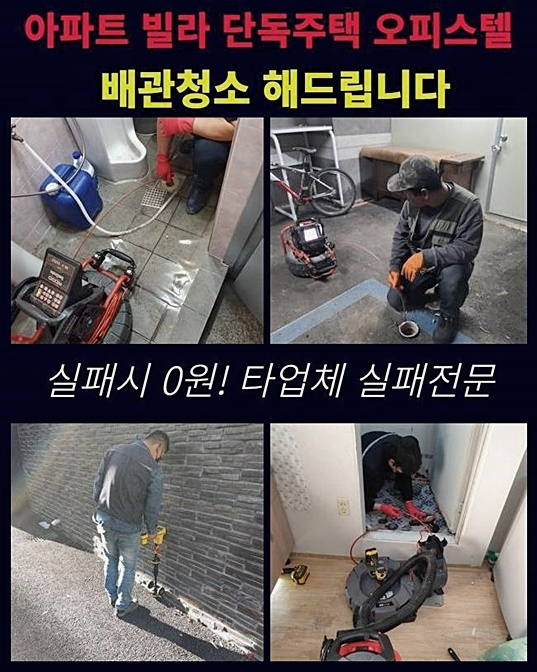
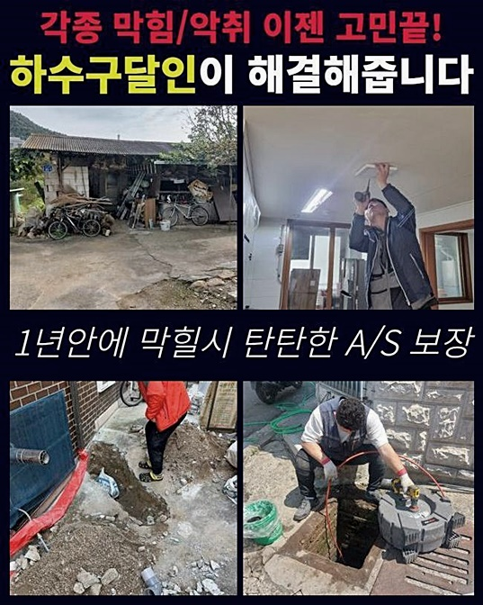
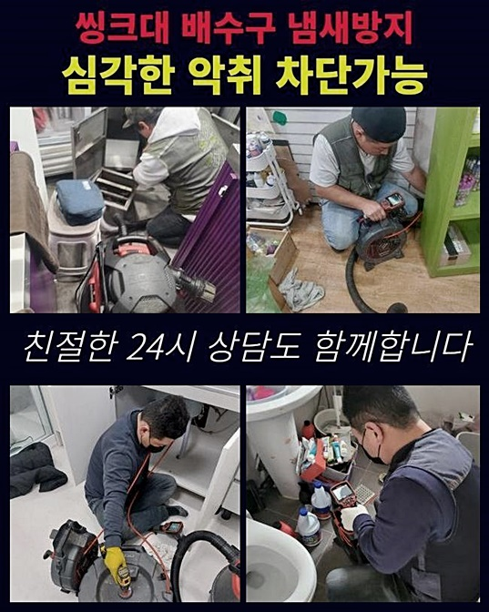
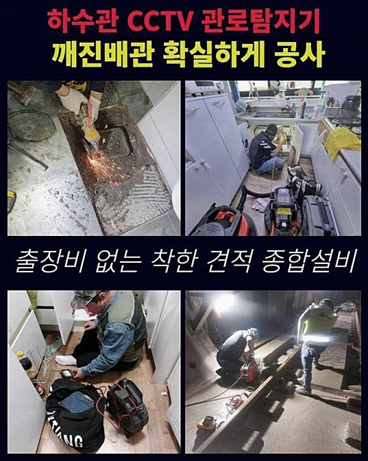

🏠 양평 서종면화장실막힘 청운면 하수구청소 누수공사
용인 싱크대막힘 전문 시공 후기

📋 작업 개요
- 위치: 용인
- 서비스 유형: 싱크대막힘, 하수구막힘, 배관막힘, 누수수리, 역류해결, 뚫는업체, 배관청소, 설비공사, 악취차단
- 작업 일시: 2024. 7. 14. 19:32
- 업체명: 하수구수사대 (010-5615-2118)
🔍 문제 상황
양평 서종면화장실막힘 청운면 하수구청소 누수공사
고요한 일상생활중에 문득 배수관이 작동하지 않으면 당황할수밖에 없죠
여기서는 배수관로에 고장이 났을때 해결할 수 있는 방안들을 설명드리니 참고하면 도움이 되실겁니다
음식재료를 관리하는 식당 업무에 문제가 발생하면 즉시 식사조차도 정시에 먹는게 어려워지니 굶어야할 판입니다
더구나 더러운 폐수가 역류하며 악취까지 퍼져서 고통스럽다면 가능한 빨리 막힘현상을 해소하고자 움직입니다
목적은 이해되지만 저희 전문가들은 일반인에 관점에서 배관청소를 완벽하게 완수하는 것은 어려운 것으로 말할수 있습니다
주택의 폐수가 넘쳐흐른 상황들에 이른 경우엔 확실히 파이프 안쪽에 지방질들과 여러가지 침전물질들이 혼재된 상태일테니 최신 도구 사용이 필요한 경우가 흔합니다
배수불량을 수리했던 작업환경도 같은 패턴을 나타냈습니다
화장실 바닥 가득 더러운물이 넘쳐흘렀고 불쾌한냄새도 대단히 심하여 힘들다고 하셨습니다
소량의 물의 흐름이라도 만들어보려고 철제옷걸이와 청소 솔을 이용해 스스로 시도하셨지만 고장난 배수관이 역류하여 지면 아래로 물기가 흡수된 상황이라 상당히 긴급함을 알리셨어요
급히 내방하여 문제 구역을 확인해보니 명백히 문제가 있는 상황으로 보였고 탁수는 물론 찌꺼기까지 무더기로 흘러넘쳐 하수도에서 나는 냄새도 심각했습니다
🔎 원인 분석
💡 전문가 진단: 정밀 진단 장비를 사용하여 슬러지의 고착 여부를 판명하고 타격/세척 작업을 실시했습니다.
여기저기 확인해보며 현황을 조사했는데 다행이 싱크대 밑에 설치되어 있는 주름호스엔 장애가 발생하진 않았다고 확인했습니다
셀프로 뚫기를 시도하다가 하수파이프가 깨지는 경우가 때때로 생깁니다
외관상의 조사를 마무리했으니 가구 하단부에 배수관로에 석션기를 삽입해서 주요 임무인 막힘 해소책의 초기 과정을 진행했습니다
사용한 장비는 습식 스타일로 남은 물도 없애는 기능이 있어 파이프를 말끔하게 만들어낸 후 작업을 시작했습니다
빈곳 없이 출렁이는 하수를 흡입하는 단계에서 오물들도 같이 나오는 일이 있기도 합니다
높은 흡입 강도로 습기를 제거하였지만 배수용기에 큰 오염입자로 의심되는 물질이 보이지 않았어요
실행하자마자 탁한 물들은 없앴으므로 다음 절차로 하수구 안쪽에 전문 카메라기기를 들여보내 문제 상황 진단을 진행하였습니다
길게 뻗은 관 끝자락에 촬영 장비가 부착되어 협소하고 깜깜한 하수구라도 원활하게 모든곳을 점검할 수 있습니다
내시경장치를 통해서 확인된 붉은색의 덩어리들이 지방이 응집된 것인데 이 기름뭉텅이인 슬러지가 붙어있는 더러운 현상이 보였습니다
내부 깊은 지점으로 위치를 설정하니 매우 큰 부피의 기름 뭉텅이가 포착되었습니다
배수관의 지름만 비좁아진게 아니라 안쪽을 막고 있던 오염요인이 존재했습니다
막힘을 발생시킨 핵심이유를 파악했기 때문에 발견한 사실들과 청소작업 절차를 보고하고 작업활동을 추진하게 됩니다

🔧 작업 과정
노즐을 들고 내시경장치를 회수했더니 점성을 보이는 기름찌꺼기들이 기계 외부쪽에 부착되어 역한 악취가 퍼지고 있었어요
오염 상태가 심각했다는 의미이니 추정해보면 주기적으로 곰팡이가 지속적으로 발생한다거나 끊임없는 냄새 때문에 생긴 불편도 있으실거라 생각되었습니다
배관 내부를 깔끔하게 조치한다면 이런 문제들도 해소할 수 있습니다
걸쭉하게 뭉친 슬러지들을 헝겊으로 정리하고 또다시 하수관안에 넣어서 목표를 정하였습니다
과일껍질이나 실리콘 조각등의 고체가 남아있다면 고리로 끌고나오는 방법으로 해결할 수 있었겠지만 기름찌꺼기가 막힘의 원인이니 회전할 수 있는 샤프트기구의 능력을 동원해야 하는 순간이었습니다
샤프트장치는 파이프에 뭉쳐진 오일찌꺼기나 이물질들을 분해하여 배관밖으로 뺴내어 주는데 도움을 제공하는 장비입니다
끝머리에 헤드지점이 쇠사슬과 같이 견고하기에 끈끈한 기름덩어리를 해체하는 작업들도 효과적으로 해냅니다
주택의 배수구 막힘문제의 사유가 잔존 오일이라면 대부분의 경우 운용하는 도구중 한가지입니다
내부상황을 영상으로 기록해서 차단이 된 구간을 분명하게 보면서 차례로 정돈작업을 했습니다
오염물을 세밀하게 쪼개어 갈아내는 절차를 마무리하면 흡입기기를 이용해 빨아들이며 위로 빼내면서 깔끔한 하수관으로 바뀌어갔어요
갈리고 조각난 찌꺼기들을 압력을 주며 아래로 보내버리면 하부에 누적되어서 해결이 고된 상태까지 일어날 수 있으니 작업의 자취는 석션기기로 불편하지만 흡입하는 작업을 각 장소에서 진행합니다
여러가구가 함께 이용하는 큰규모의 오수 처리시스템에 이물질 때문에 생긴 막힘이 발생했다면 작업의 양이 굉장하게 많으니 압력을 가하여 밀어내는 방식을 채택합니다
주택에서 배수구 문제들이 일어난 상황이라면 알아낸 근본원인을 개선하는 것에 주요 목표를 삼고 정비작업을 실시해드리고 있습니다
좀 수고스럽더라도 깨끗하게 하수도 안쪽 여건을 개선해두면 동일한 사유로 시간을 쓸데없이 소모하지 않아도 돼요
어차피 정비를 맡게 되었으니 철저하게 수행해서 근본원인과 함께 앞으로의 전망까지도 전반적으로 관리해드리는 것이 배수구 수리전문가의 의무라고 여깁니다
개수대 하수관 정돈을 말끔히 완료하고 나서 작업구역을 다시 확인해보니 맑은 상태의 물이 흘러가고 있다는 것을 알아챘습니다
붉은 오염물이 잔류하지 않고 모두 다 끄집어내서 없앴으니 유사한 장애들이 다시 생길 위험성이 미미하다고 예상할 수 있어요
눈으로 현상을 확인한 후에는 실질적 향상을 살피기 위해 물 흐름 확인을 해보았어요
미처 생각하지 못한 오류들이나 막힌 구역이 잔재할 가능성도 있어 물을 충분히 넣어 하수관 속으로 붓기 시작했습니다


✅ 작업 완료
감사하게도 원활하고 시원하게 흐르기에 오늘의 작업 또한 순조로움을 분명히 알게됐어요
여러가지 소품들로 급하게 뚫어보다가는 파이프가 부서져서 크나큰 피해가 초래될 우려가 있으니 하수관 정비 전문인을 알아보고 부르셔서 문제를 해소하시라고 말씀드리고 싶어요
하수구 장애상황은 신속한 대응이 도움이 되는데 전국 어느곳이든 60분안에 방문할 수 있어서 걱정에 사로잡히지 않아도 됩니다
덧붙여 정직한 비용 정산을 통해 경제적 압박 또한 소통을 통해 경감하기위해 애쓰니 불필요한 염려는 덜고 맡겨주신다면 신속히 방문드리겠습니다
철저한 검토를 기반으로 완벽히 깨끗한 하수관 정비를 완료하여 기대에 부응하겠습니다


⚠️ 베란다 누수 및 방수 관리 방법
- ✅ 비가 많이 올 때 창틀 주변이나 아래층 천장에 얼룩이 생기는지 정기적으로 확인해 보세요.
- ✅ 우수관 주변 실리콘 마감이 들뜨거나 깨진 틈새가 있는지 손상 여부를 수시로 체크하세요.
- ✅ 베란다 바닥 타일의 줄눈(메지)이 소실되면 그 틈으로 물이 침투하여 누수가 유발됩니다.
- ✅ 누수 의심 증상 발견 시 방치하면 아래층 손실이 커지므로 즉시 전문가의 진단을 받으십시오.
💡 핵심 정리
- 확실한 장비 작업(내시경 점검 및 샤프트 스케일링)으로 원인을 뿌리 뽑습니다.
- 작업 후 1년 이내에 동일한 부위 재발 시 100% 무상 A/S 서비스를 보장합니다.
- 서울 · 경기 · 인천 전 지역에 24시간 언제든 긴급 출동할 수 있도록 항시 대기 중입니다.
❓ 자주 묻는 질문 (FAQ)
🚨 용인 싱크대막힘 문제로 고민이신가요?
정확한 원인 진단과 확실한 시공으로 재발 없는 해결을 약속드립니다.
24시간 긴급 출동 | 서울 · 경기 · 인천 전지역 | 1년 내 재발 시 무상 A/S